- Mobile and tablet
- Design systems
- Research
Rebuilding the Master Tour app for 60,000 people on tour
Master Tour is a suite of products built for touring professionals. I led design for its mobile redesign, a new venue product, and its first design system.
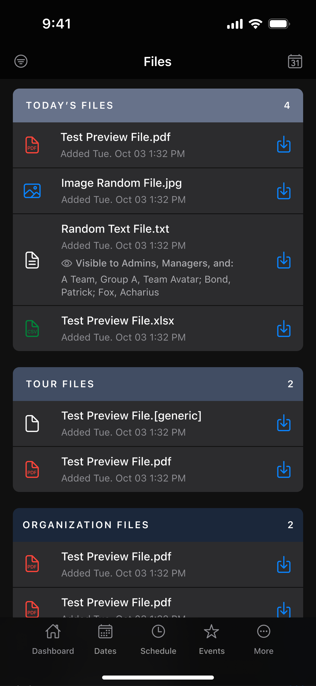
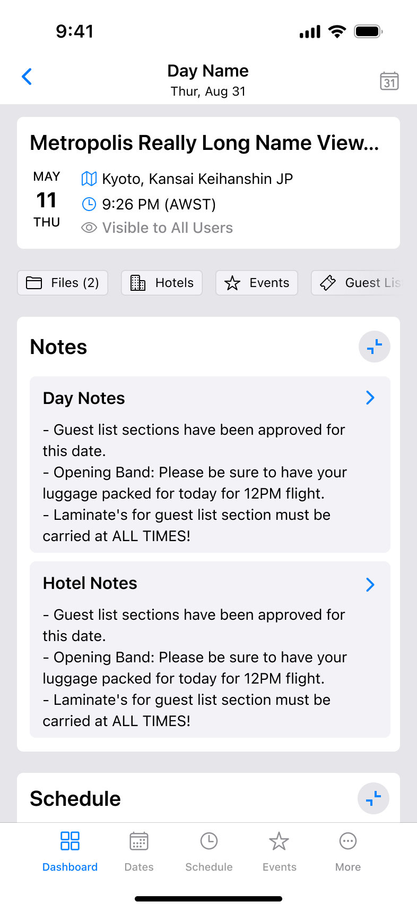
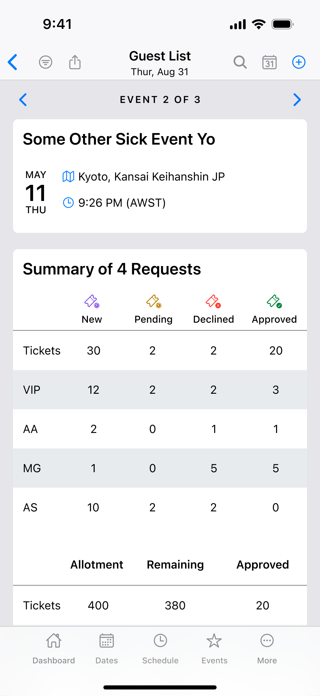
- My role
- Lead UX Designer
- Only UX designer for my first two years
- Timeline
- May 2023 to June 2026
- Public mobile launch, November 2025
- Team
- Lead PM, lead engineer and the engineering team, COO / VP of Product, and me as lead designer
- Platforms
- iOS and Android, phone and tablet
- Web for Master Tour Venue
The short version
The challenge
The mobile app hadn't seen a real update since it launched, seven years earlier. Information was buried several taps deep, and the most requested feature was simply more editing on mobile.
What I did
Rebuilt the app's UX and information architecture from scratch over seven months, added a show-day Dashboard, reworked navigation, files, and the guest list, and built Eventric's first design system.
The outcome
Shipped to the App Store and Google Play in late November 2025 for 60,000+ monthly users, after a 20-person beta changed how the Dashboard works.
Methods and skills
- User interviews
- Beta testing
- Concept testing
- Prototyping
- Information architecture
- Mobile and tablet UI
- Figma variables and tokens
- Stakeholder management
On this page
One app every user touches
Master Tour is split across two apps. Tour managers are the paying customers, with over 6,000 monthly subscriptions, and they use both the desktop and mobile apps. Crew members and everyone else on a tour use the mobile app for free once a tour manager adds them to their organization. That's how mobile reached over 60,000 monthly users, about ten for every paid subscription.
Neither app had a source of truth in Figma. The only reference for how either one worked was the live build itself. That gap was a big part of why we redesigned mobile, since it's the one app every user touches.
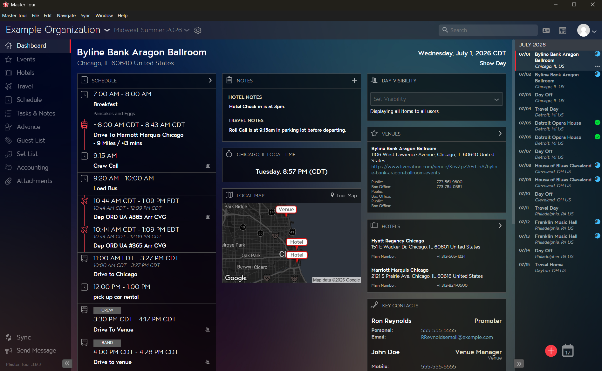
The first designer in almost 20 years
I joined Eventric as their first full-time designer in almost 20 years, and for two years I was the only UX designer at the company. My work included redesigning the mobile app for Master Tour, their touring and live event logistics software, used by tour managers to coordinate shows and by crew members to check travel times, guest lists, set lists, and other day-of details on the road.
Because the executive team was watching this project closely, I spent as much time managing expectations and gathering input as I did designing. The Figma file collected over 1,000 comments from leadership and engineering before the MVP was signed off. Balancing that feedback against what was actually feasible for development, while keeping the redesign coherent, was as much a part of the job as the screens themselves.
From a blank file to the app stores
The mobile app hadn't seen a real update since it launched, seven years earlier. Over seven months I rebuilt the app's UX and information architecture from scratch, using Forma 36 as a base design system since none had existed before. This was also the first source of truth the team had ever had outside of live builds, which meant building out a real design and prototyping process alongside the redesign itself.
Designs were mostly signed off in July 2024, with some changes along the way to account for development. From there, a small team took about 16 months to get the app out the door. After a limited beta, the app launched to the public in late November 2025.
May 2023
Joined Eventric
No design system, no Figma source of truth
7 months
Redesign
UX and IA rebuilt, concepts tested with interviews and prototypes
July 2024
MVP sign-off
After 1,000+ Figma comments
About 16 months
Build and beta
20 power users, 15 interviewed
Nov 2025
Public launch
App Store and Google Play
Key decisions
Open on a show-day Dashboard instead of a list of dates
The situation
The app used to drop everyone onto a list of dates. Show-day details sat several taps deep.
What I chose
We added a Dashboard so mobile would feel closer to what tour managers see on desktop, with the day's venue, schedule, notes, and files at the top level.
The trade-off
Bringing desktop-level detail to one phone screen meant a lot of information competing for space, which is exactly what the beta pushed back on.
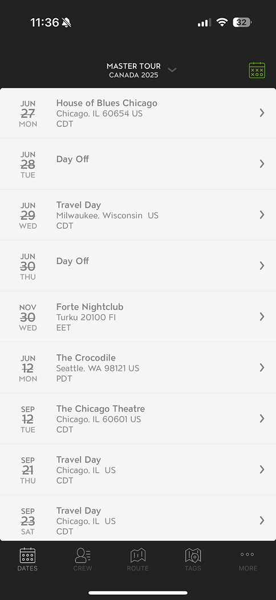
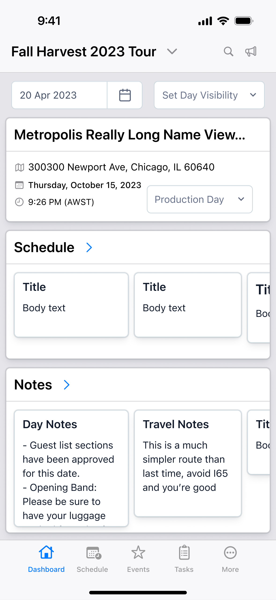
Change the Dashboard layout based on beta feedback, before launch
The situation
Before the public release, we ran a limited beta with 20 power users, and I interviewed 15 of them. Tour managers kept raising the same worry: with the Dashboard's horizontally scrolling cards, crew could easily miss key details.
What I chose
I reworked it into a vertical layout with collapsible sections before launch.
The trade-off
A longer page to scroll, in exchange for nothing hidden off to the side. Collapsible sections let each person fold away what they don't need.
Fifteen beta interviews caught a layout problem we would otherwise have shipped to 60,000 people.
Let people build their own navigation
The situation
Different roles lean on different parts of the app. Some users only ever submit guest list requests, for example. The original bottom nav had four fixed tabs, and a lot of information sat at least four taps deep.
What I chose
The new More menu brings any section down to two taps. Unlocking it lets you drag tabs into any order, so the ones you use most are pinned to the bottom nav.
Why it matters to me
I'm personally very proud of how this turned out.
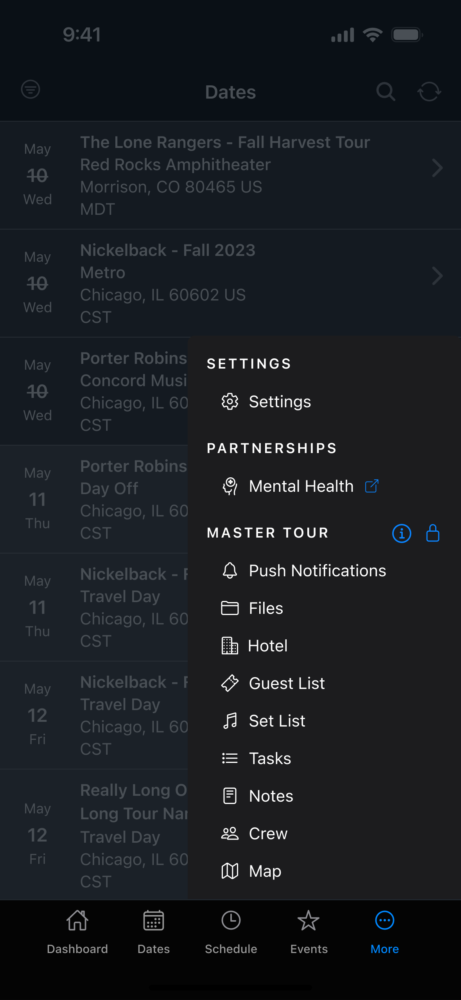
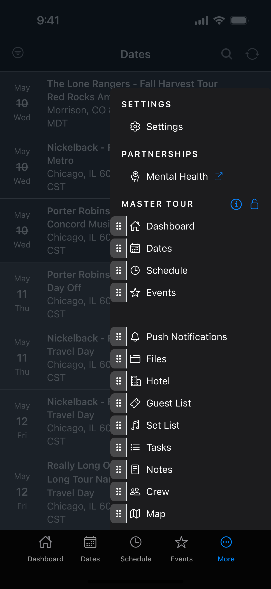
Put every file in one place, and actually use the tablet
The situation
Mobile users could only open files attached to a specific date. The original app ran on tablets but rarely scaled to fit them.
What I chose
Files now shows tour and organization files alongside the day's files, and the list can be filtered. Both were new to mobile. On tablet, Files splits into two columns in both portrait and landscape.
The result
Tablet users get a layout made for the screen instead of a phone list stretched edge to edge.
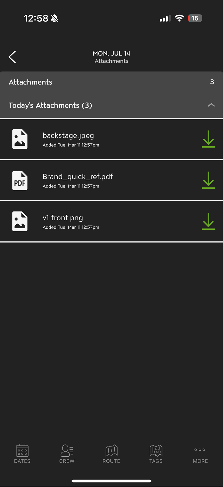
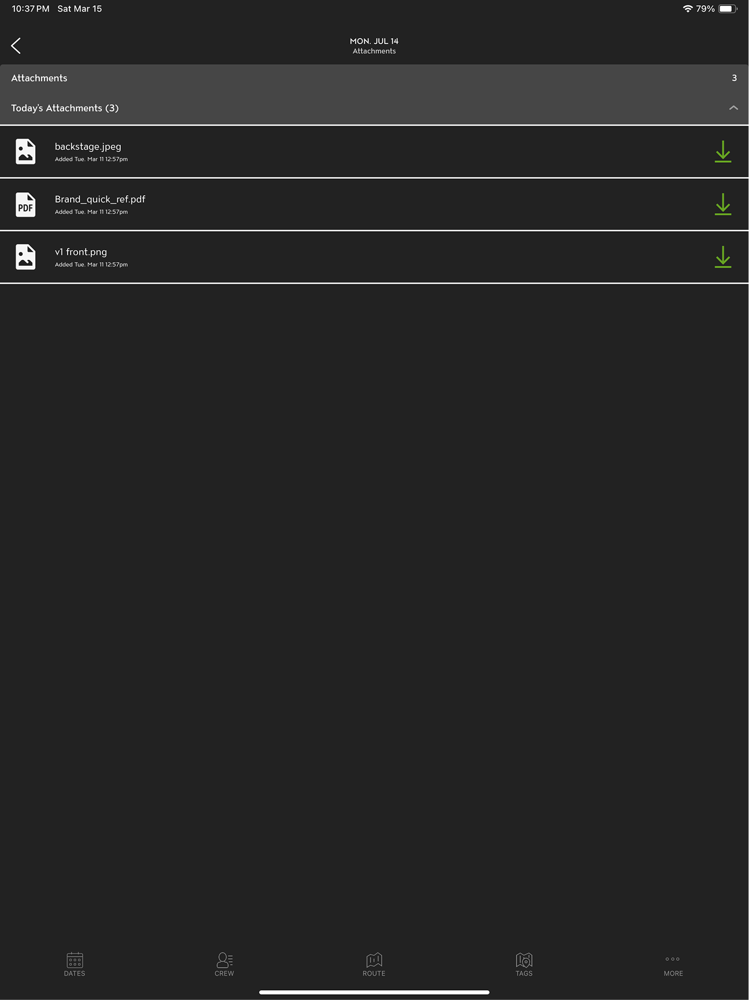
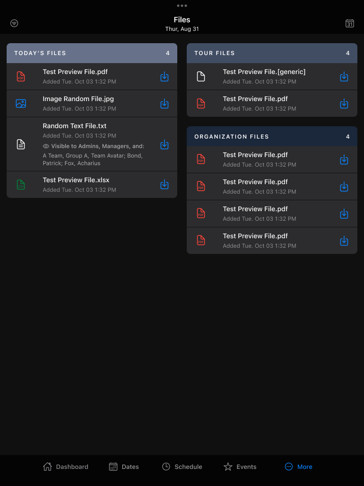
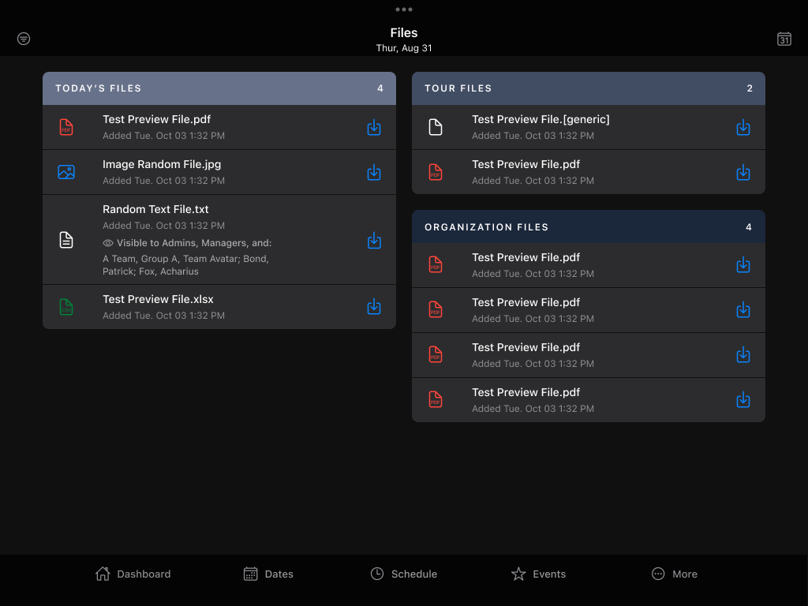
Guest list: summary first, actions in the list
The situation
Guest list requests used to sit in a plain list, with the summary at the bottom and actions hidden in a popup.
What I chose
The redesign moves the summary to the top, breaks it out by status, and lets you change a request's status right from the list.
How it evolved
The draft split requests into two groups. The final version shows every status, plus allotment and remaining counts.
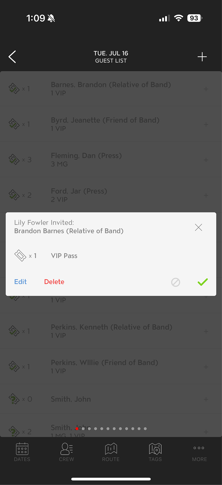
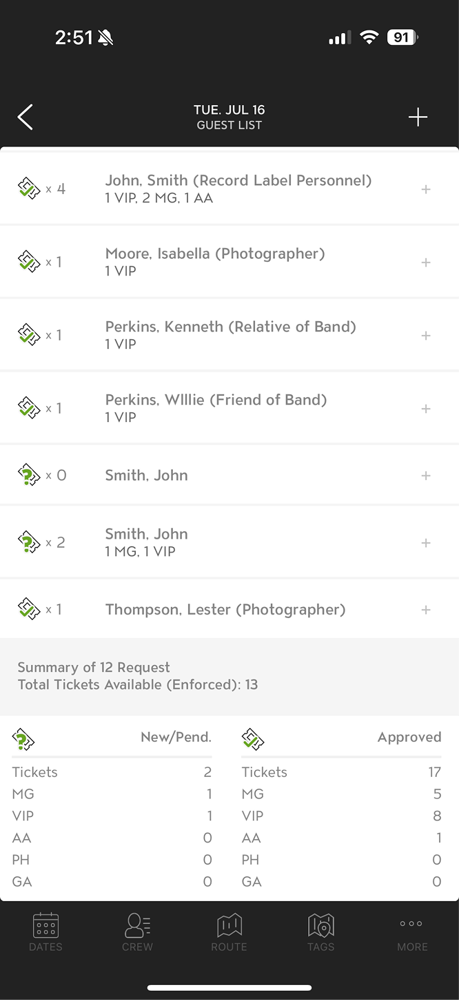
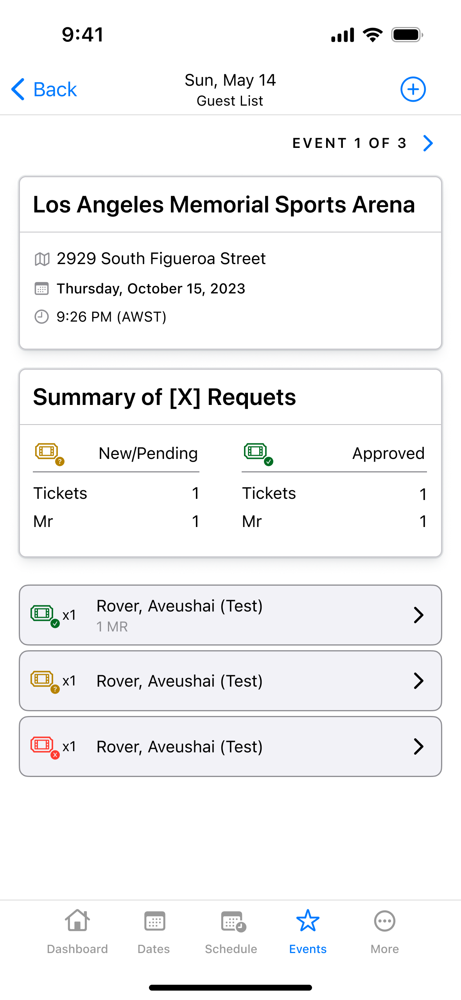
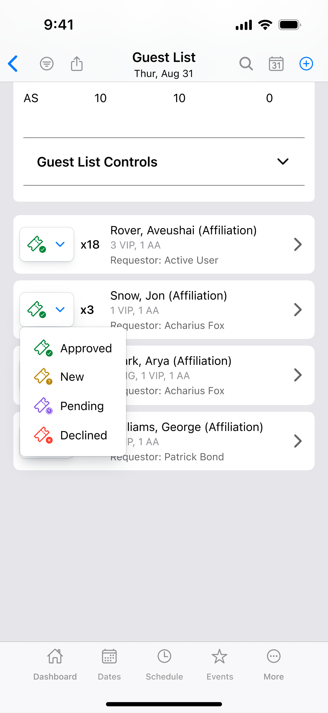
There are a lot more features and UX improvements I'd love to show here, but this page would get very long. If you're curious about any of the changes I made, reach out. I've spent many hours thinking about this app, and I'm always happy to talk about what I learned.
A design system you can switch in two clicks
As the product grew, I rebuilt the design system to keep pace, moving from manual styles to Figma's variables and tokens once they became available. By the end, the entire app could switch between mobile and tablet, or light and dark mode, in two clicks, with font size and spacing adjustable globally or per component. That structure also made the system easier to work with using AI tools, which became a growing priority as the design landscape shifted.
The original file stayed with Eventric, so I rebuilt the released Dashboard in code using the same setup: a primitives collection, plus one collection that applies them. Try switching the modes below.
Master Tour Venue, a new product
Master Tour Venue started with our CTO. The goal was to connect venues to Master Tour so accurate information flowed between both systems. The proof of concept was a Tech Pack that venues could claim, then sign up for Master Tour Venue to keep their details in Master Tour correct.
Out-of-date venue info is a massive pain point in touring. Bands and crew each have their own riders and load-in requirements, and venue details go stale quickly.
A contract designer started on the project before I joined, and the green color scheme is their work. Once I came on, I oversaw the main designs for two pieces. The Tech Pack is a shareable link venues can send to touring crews. The Admin Dashboard is where venue admins sign in and keep their information up to date. Since I was also working on Master Tour Mobile, I built a design system using Material Design's Figma plugin, then used it to course-correct the scale, color, and layout of pages that had already been designed.


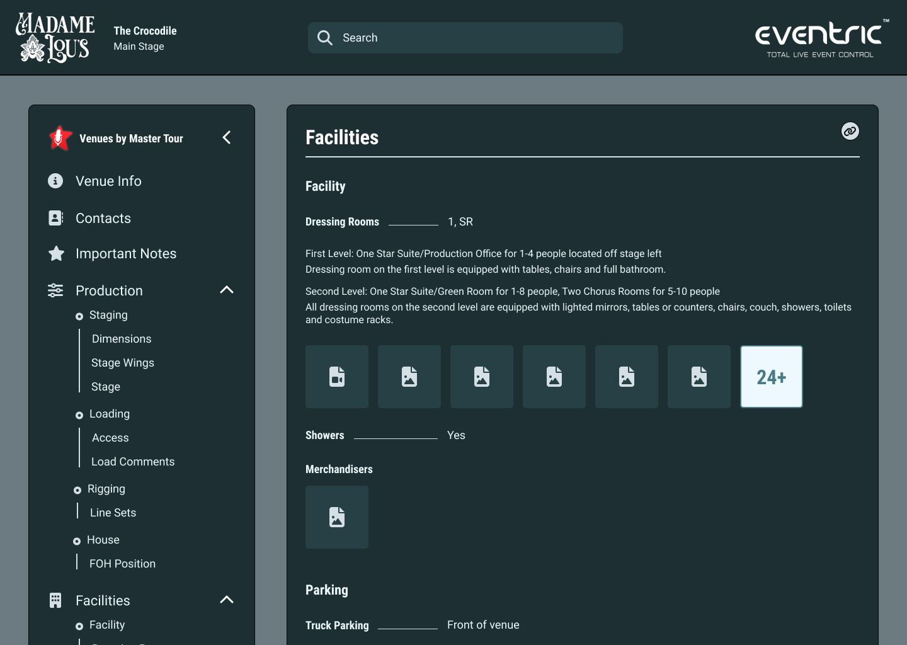
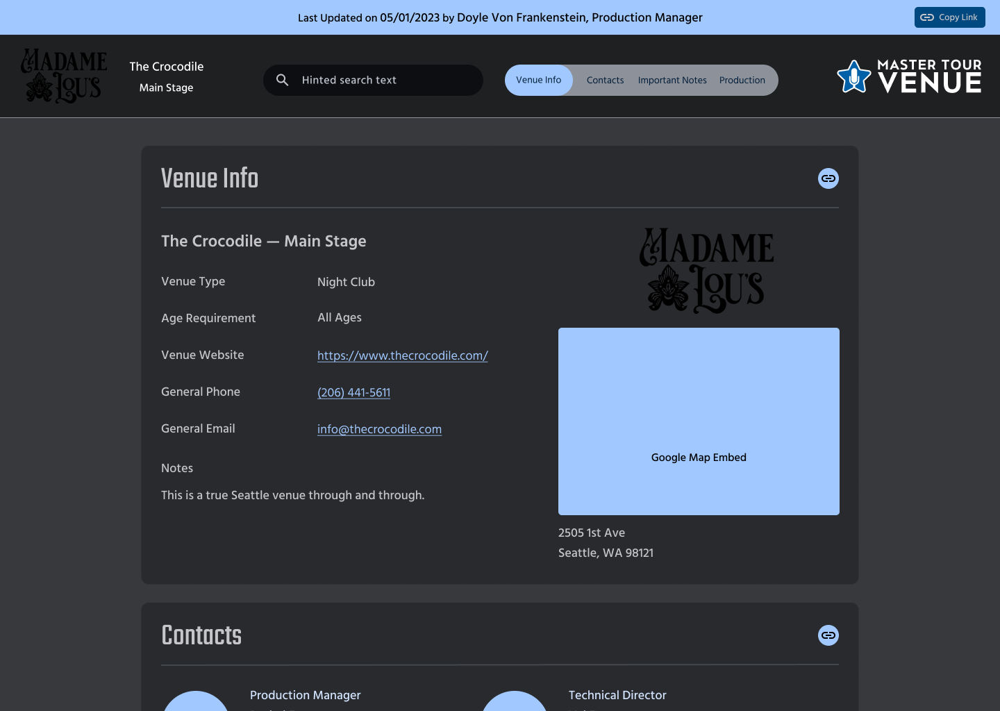
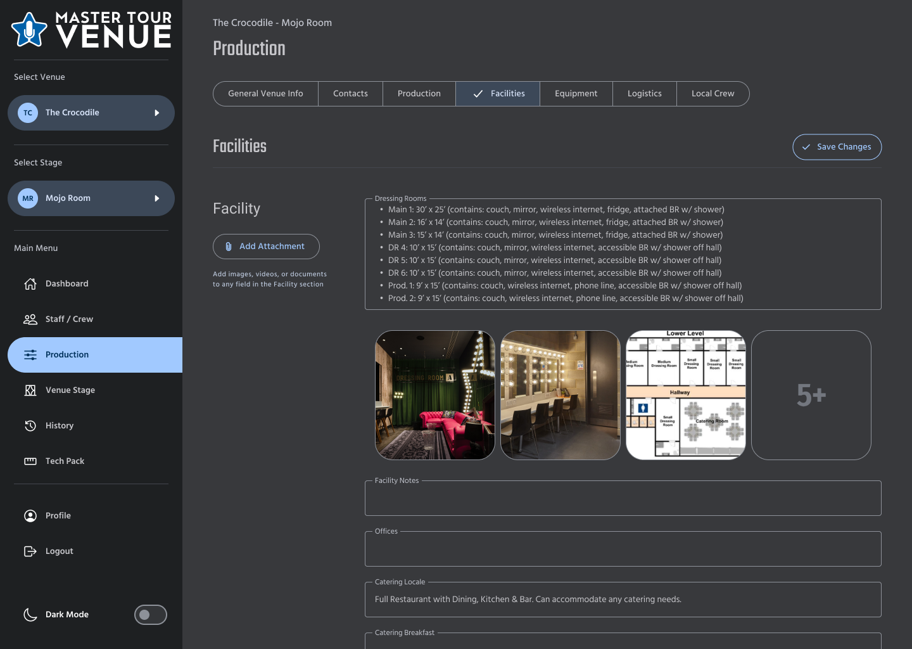
Logo and website
Logo redesign
The Master Tour logo needed to be brought into a modern era. The old star was also wider than it was tall, which made it hard to use in square spaces like a mobile app icon. I redrew the star to fix both, then carried it across the Master Tour, Master Tour × Eventric, and Master Tour Venue logos. I also tried over 500 font variants for the wordmark, but in the end the CEO decided to keep the original font.
Website
I redesigned the Master Tour website, its first update in seven years. The client list was out of date, and we wanted to refresh the brand for people who might be finding us for the first time. The website is also where tour managers sign up for their 14-day free trial, which makes it the first step of the journey for our paying customers. First impressions matter.
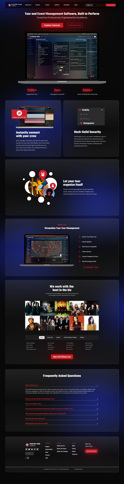

Scale and results
- 60,000+monthly mobile users on the redesigned app
- 6,000+monthly paid subscriptions from tour managers
- 4 to 2taps to reach any section with the new More menu
- 1,000+Figma comments from leadership and engineering worked through before MVP sign-off
- 500+phone and tablet screens in the redesign
- Nov 2025public launch on the App Store and Google Play
Reflection
What worked
Putting the design in front of power users before the public launch. The beta interviews were short, but they changed the most important screen in the app.
What I'd do differently
With 16 months between sign-off and launch, I'd set up a lighter, living spec early on, so the changes we made for development were tracked in one place instead of across comments.